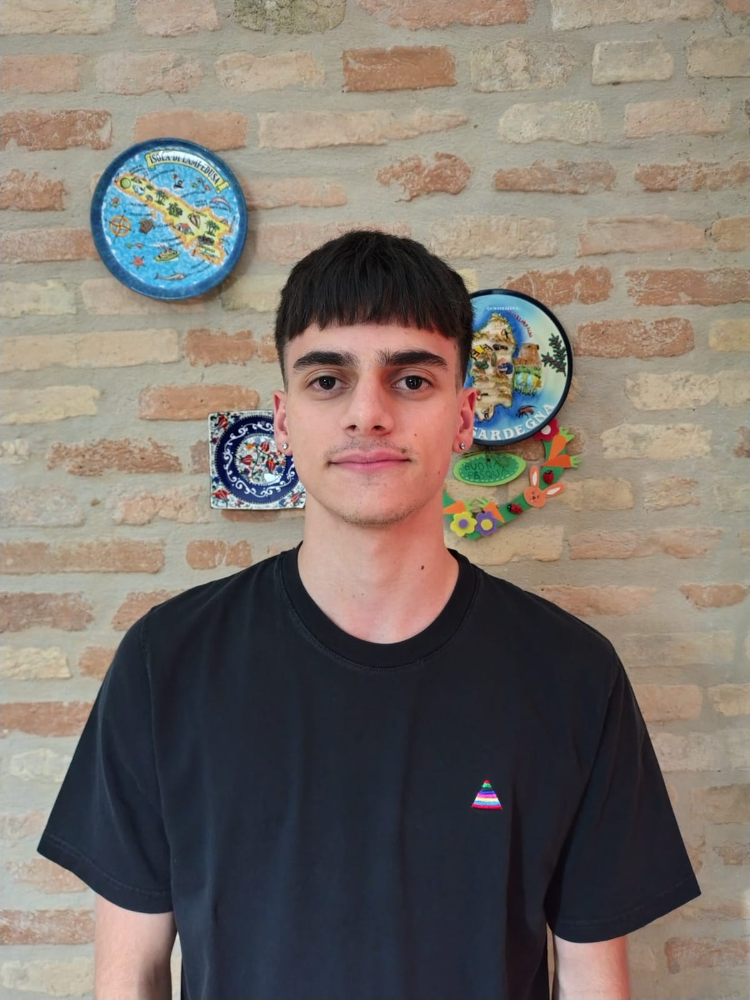
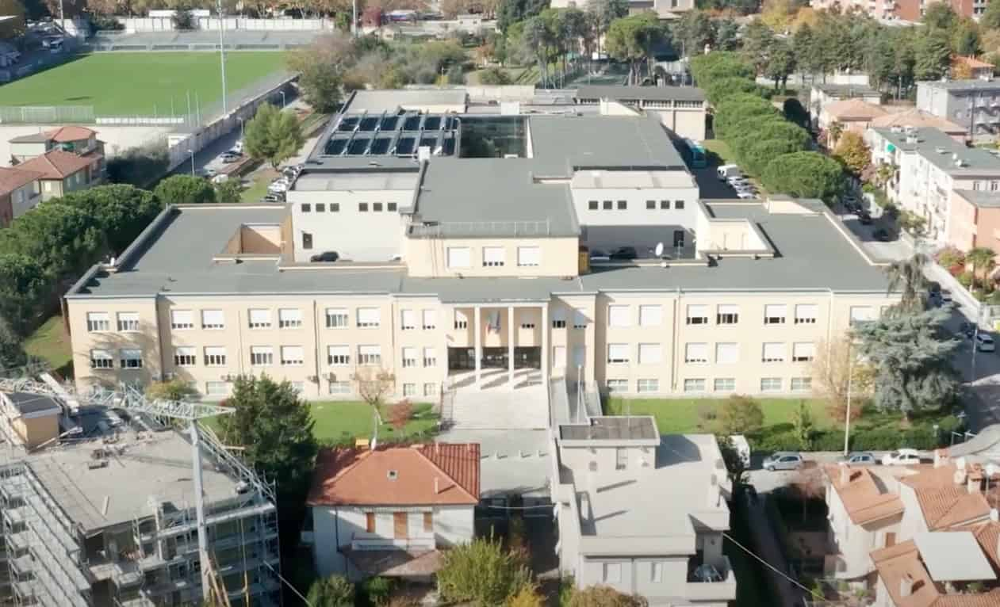
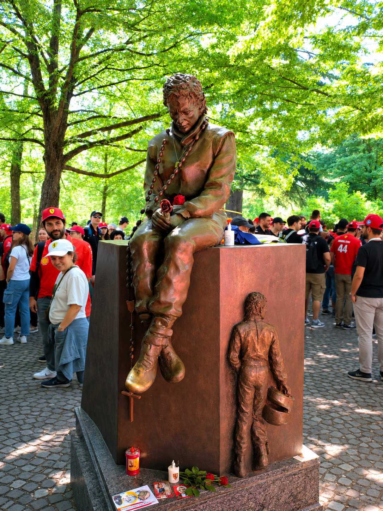
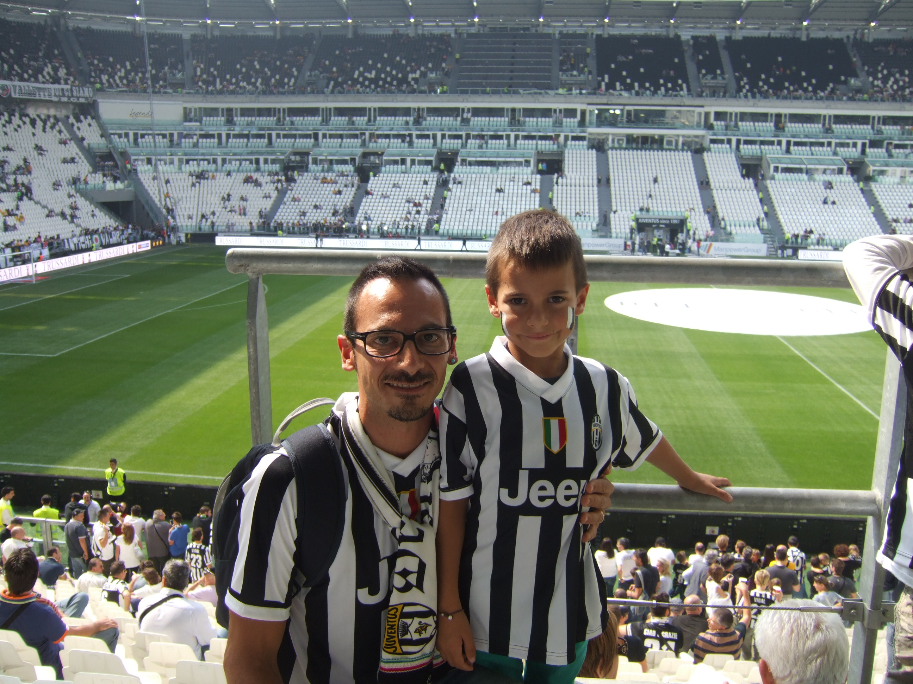

Tommaso Rotoloni
Cinque anni di scuola, le cose che mi appassionano, qualche progetto: ecco quello che ho da raccontare.

2. Chi Sono e il Mio Percorso
Ho 19 anni e vivo a Morro d'Alba. Sono una persona sempre in cerca di nuove sfide e nuove passioni; cerco di mantenere attiva la mia curiosità perché, d'altronde, è ciò che muove il mondo. Inoltre, cerco sempre di farmi trovare disponibile, aiutando chiunque ne abbia bisogno.
Il mio bilancio critico (Oltre le righe del codice)
Ho scelto questa scuola spinto da una forte curiosità verso il mondo tech, un interesse nato fin da quando ero bambino, tanto che il computer è stato lo strumento con cui ho mosso i miei primi passi nell'apprendimento e nella scrittura.
Nel corso degli anni, però, non sono state sempre rose e fiori. Ho affrontato difficoltà reali con la programmazione pura che mi hanno portato a una maturazione importante: capire che lo sviluppo software e la scrittura di codice non rappresentano realmente ciò che voglio in questo momento per il futuro. Non è però tutto da buttare: il marconi-pieralisi mi ha lasciato un bagaglio inestimabile, insegnandomi come pensare, la logica strutturata, la capacità di analizzare problemi complessi e una solida forma mentis tecnologica.

Uno sguardo al futuro: Direzione Economia
Finita la maturità , di solito ci si ritrova difronte al vuoto, per la prima volta non ci sarà nessuno a dirti cosa fare, perciò ho cercato di anticipare questo inconvenevole, guardandomi intorno, prima con l'intenzione di trovare un'occupazione, successivamente ho cambiato idea, puntando ancora una volta sullo studio. Infatti, ho deciso di intraprendere una strada nuova dove sfruttare la metodologia analitica della mia scuola: proseguirò gli studi iscrivendomi alla Facoltà di Economia presso l'Università Politecnica delle Marche in Ancona.
Sono convinto che l'unione tra la mentalità tecnica dell'ITIS e gli studi economici sia una combinazione vincente per capire i mercati moderni, dove la gestione dei Big Data, la digitalizzazione e l'analisi dei flussi finanziari e informativi sono ormai colonne portanti di ogni azienda.

3. Le Mie Passioni
Fuori dall'aula e dai laboratori, cerco sempre di mantenere il giusto equilibrio dedicandomi a ciò che mi emoziona, mi mette alla prova e mi permette di staccare la spina:
Musica
Durante la giornata ascolto spesso la musica, mi serve per intrattenermi mentre faccio altre attività , come gameplay, oppure attività fisica individuale, ad esempio durante la corsa. La ascolto anche nei momenti vuoti, dove non ho nulla da fare, ascolto diversi generi musicali, spesso distanti tra di loro, magari un giorno ascolto la musica dei giorni d'oggi, oppure una playlist degli anni '80/'90.
Motorsport e Formula 1
I motori sono una altra mia grande passioni, seguo in particolare fin da piccolo la formula 1, seguendo saltuariamente anche le moto. Non mi limito a seguirli da casa: lo scorso anno ho passato una giornata di puro divertimento e passione all'Autodromo Enzo e Dino Ferrari di Imola, andando a veder correre la Formula 1. Sentire il rombo dei motori dal vivo e vedere questi mostri di ingegneria è qualcosa di stupefacente e unisce perfettamente la mia passione per le corse e la velocità .

Il Calcio e lo Sport
Il calcio rappresenta la mia passione più grande, lo pratico sin da piccolo, fino all'età di 17 anni sono sempre stato legato alla squadra del mio paese, giocando con i miei amici dell'epoca, negli ultimi anni invece ho girato altre squadre della zona cercando di migliorare sempre di più, queste esperienze fuori dalla bolla del mio paesino mi hanno permesso di conoscere nuove persone e sviluppare fiducia in me stesso, ad oggi sono legato alla società sportiva Ostra calcio. Per me il calcio rappresenta un modo di sfogare tutte le pressioni e le difficoltà di tutti i giorni, appena entro all'interno del rettangolo verde, tutti i problemi svaniscono, mi sento più leggero e ciò mi permette di lavorare meglio con i miei compagni. Lavorare in sintonia con i compagni per raggiungere un obiettivo comune sul campo è una soft skill fondamentale che mi porto dietro anche nella vita di tutti i giorni.

Il Ping pong
Il ping pong è una passione più recente, l'ho scoperto durante l'estate del 2025, all'inizio ero una vera frana, ma con la stessa dedizione che dedico tutti giorni a scuola e calcio, sono migliorato molto, chissà se quest'estate sarà possibile fare qualche torno, misurandomi con persone sicuramente più esperte di me.